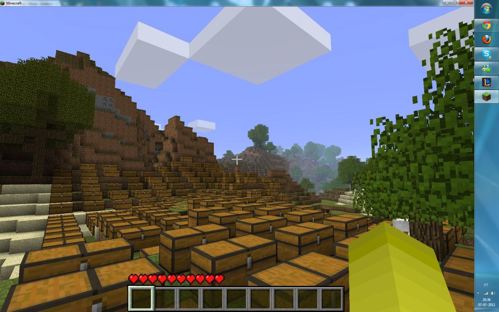
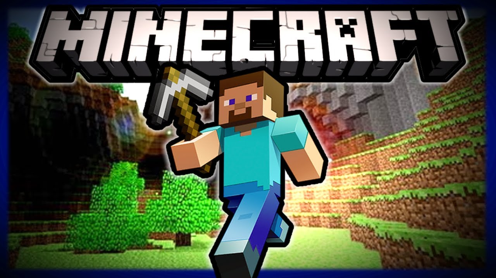
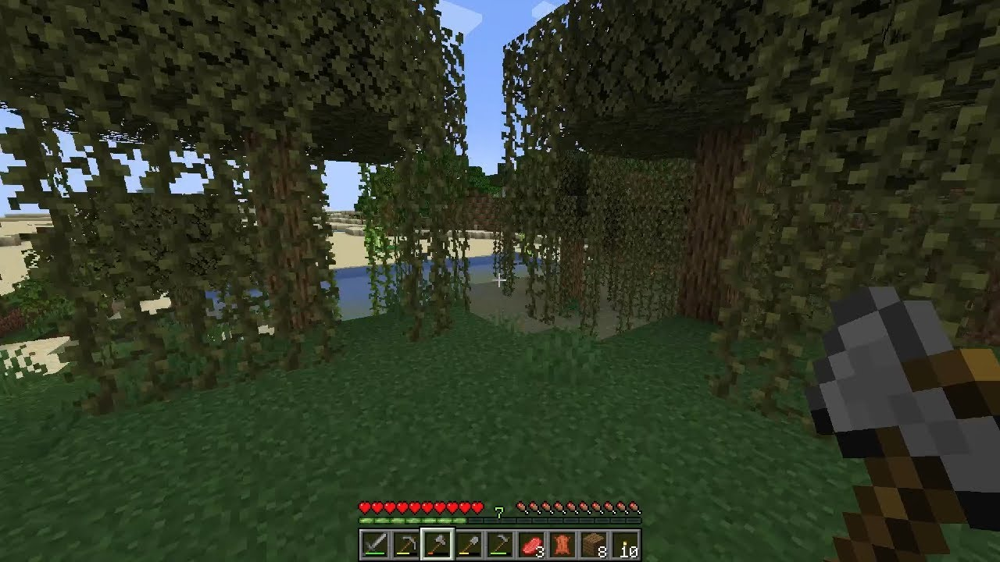
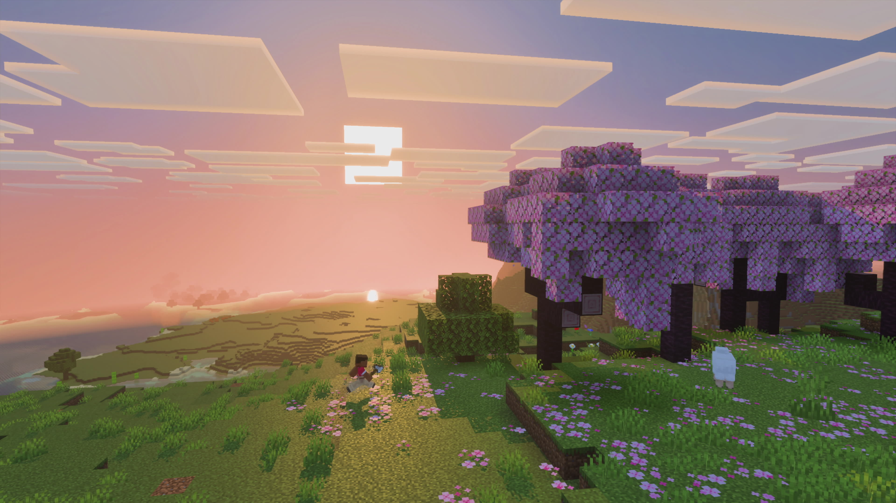

Kas tai yra?

Minecraft tai labai populiarus „sandbox“ tipo žaidimas, kuriame žaidėjai gali laisvai tyrinėti atvirą pasaulį, statyti ir kurti įvairius dalykus iš blokų. Minecraft yra vienas perkamiausių žaidimų pasaulyje. Jį žaidžia šimtai milijonų žmonių, o kiekvieną mėnesį prisijungia daugiau nei 100 milijonų aktyvių žaidėjų. Šis žaidimas išsiskiria savo paprasta, kubine grafika ir beveik neribotomis galimybėmis. Jis naudojamas ne tik pramogai, bet ir mokymuisi pavyzdžiui: programavimui ar loginiam mąstymui. Taip pat žaidėjai gali kurti įvairius mechanizmus naudodami „redstone“, kuris veikia panašiai kaip elektros grandinės. Minecraft išlieka populiarus, nes nuolat atnaujinamas ir turi labai aktyvią bendruomenę, kuri kuria naują turinį ir idėjas.

Skirtingi žaidimo būdai
Minecraft žaidime yra daug skirtingų žaidimo būdų, todėl kiekvienas gali rasti tai, kas jam patinka. Vienas populiariausių būdų yra statyba. Žaidėjai kuria namus, miestus ar net ištisus pasaulius iš blokų. Kiti labiau mėgsta PvP, kur vyksta kovos su kitais žaidėjais ir reikia greitos reakcijos bei strategijos. Taip pat yra „redstonerių“ kurie kuria įvairius mechanizmus, spąstus ar net sudėtingas logines sistemas. Galiausiai, daugelis žmonių žaidžia Minecraft tiesiog atsipalaidavimui. Ramiai tyrinėja pasaulį, kasa resursus ar leidžia laiką be jokio spaudimo. Dėl šios įvairovės žaidimas išlieka įdomus labai skirtingiems žmonėms.

